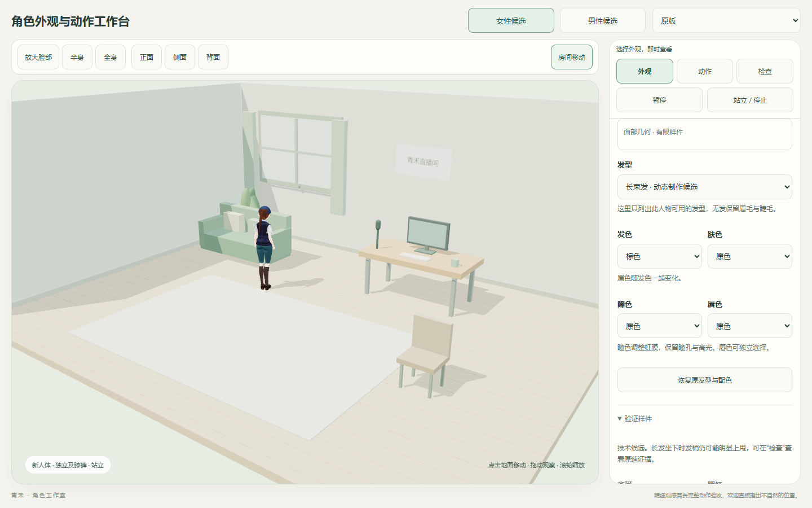
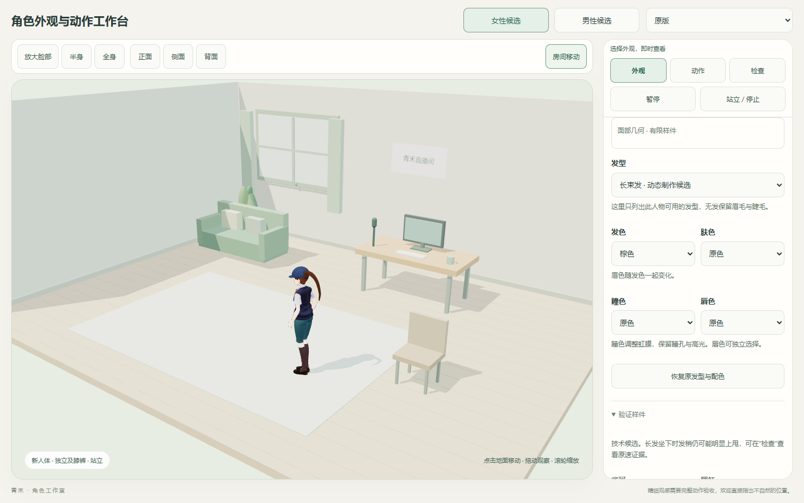
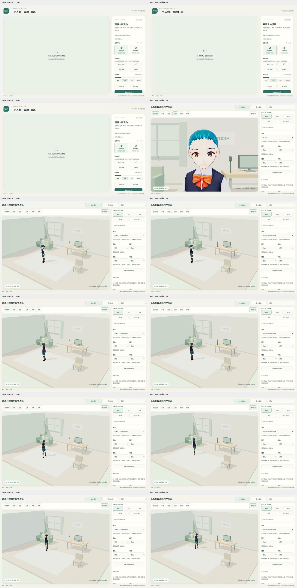
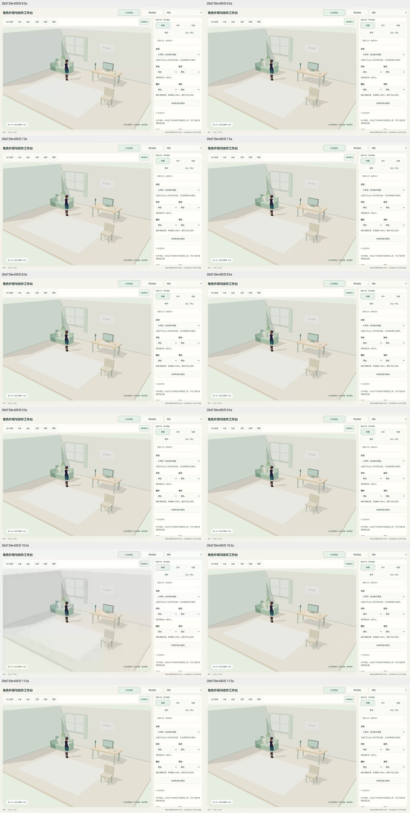
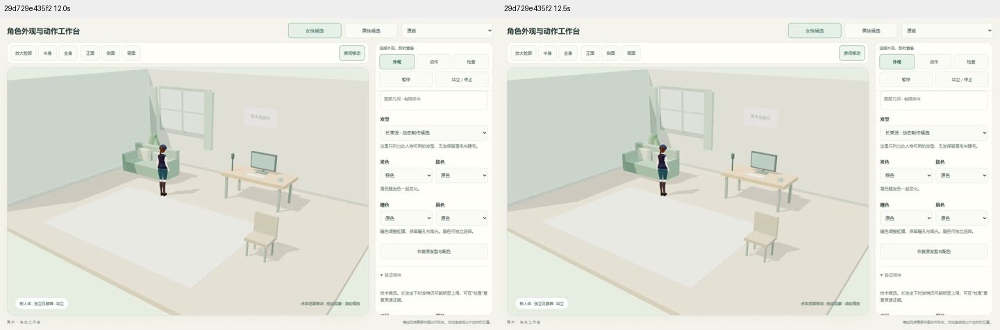
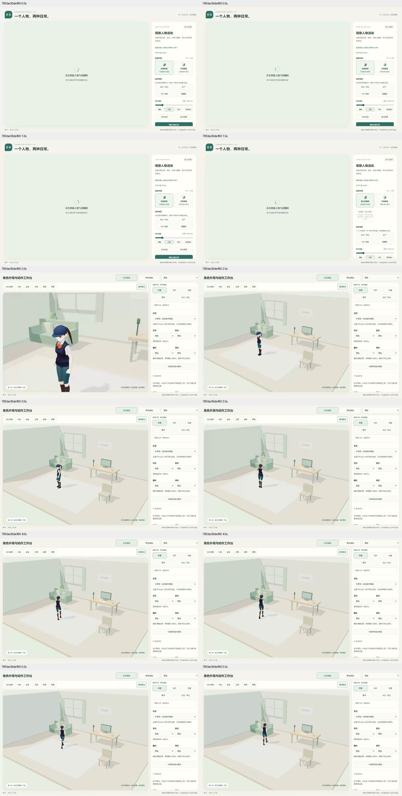
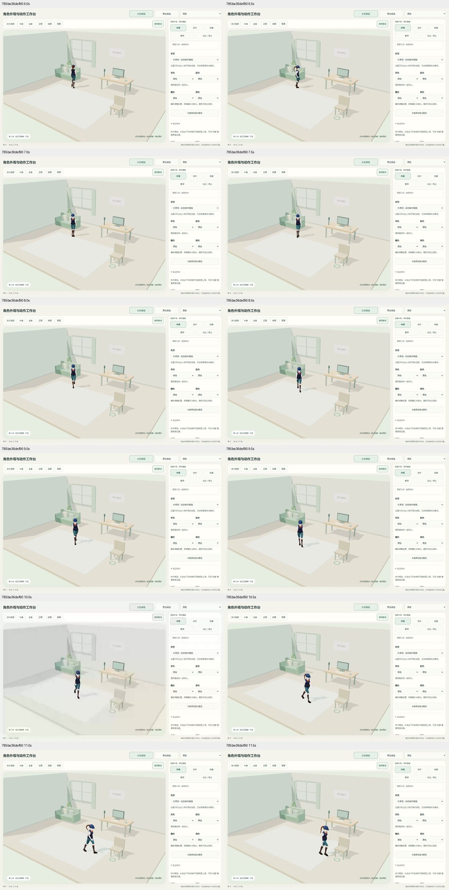
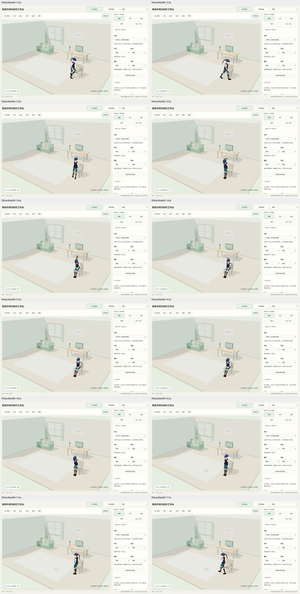
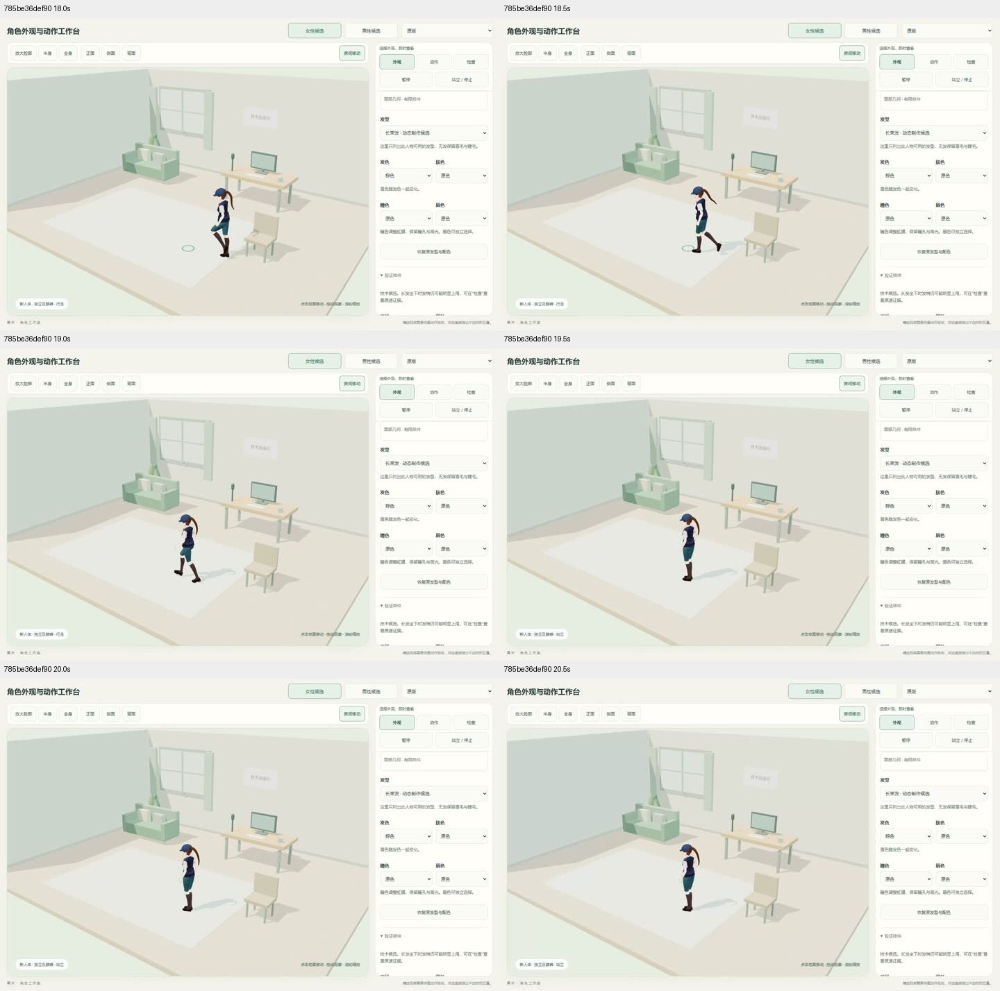

相同原女性 v8 配方、room 镜头、速度 1.05，先 walkTo(−1.4, −0.6)，再请求坐下。
旧版在本次 6 秒观察窗口中位置保持不动，坐下任务仍为 running、sitProgress 为 0。新版坐下任务实际 completed，随后完成站起和离开。
两条原片完整保留各自构建身份与加载起点，默认 1×。旧版停滞后两片无法保持动作阶段同步，请分别播放。
已知长发坐入上甩仍保留。本页只覆盖该路径回归，动作自然度、完整 M1 和普通电脑验收仍需另有证据。
共同使用的女性 v8 配方 · 实际身份、结果与源文件 SHA
构建 29d729e435f2
源码 4fac2499813bbe36132f8340dd518f71f50436e5

构建 785be36def90
源码 23c1140a01d26b6f1c10ac4f8064f366add3ba17







